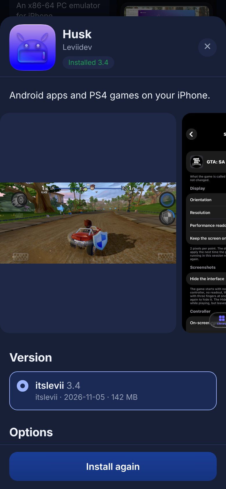
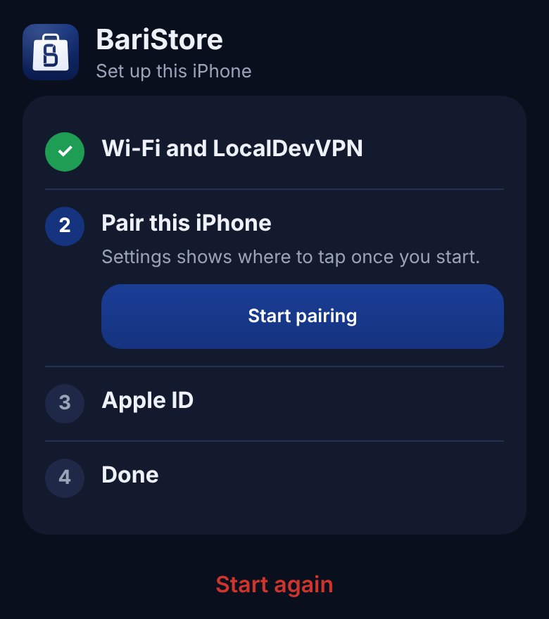

Everything on one device
BariStore pairs with the iPhone or iPad it runs on, signs apps there and installs them there. Nothing else to buy, plug in or keep running.
No computer, no second device
Pairing, signing and installing all happen on the iPhone or iPad itself.
No Developer Mode beforehand
It does not need to have been on before: pairing makes it appear in Settings, and BariStore shows where to tap.
Uses none of your 3 app slots
BariStore runs inside Open Minis, so all three free-account slots stay yours. It looks and works like an App Store app.
Refresh in seconds
A refresh only renews the apps' profiles: nothing is downloaded, signed or uploaded again.
JIT with one tap
Open emulators and other JIT apps with JIT on, right from BariStore, without another app.
Sources, updates, beta tracks
App sources, any IPA from Files, one-tap updates and an opt-in for nightly or alpha builds per app.
Your icons, your App IDs
Pick any picture as an app's icon, type your own App ID, and turn on Increased Memory Limit after the install too.
Straight into LiveContainer
Send an app from Featured or an IPA from Files into LiveContainer; an app from one of your sources arrives with its source.
Install
About five minutes, once.
Get the two apps
Install Open Minis and LocalDevVPN from the App Store, join Wi-Fi and connect LocalDevVPN.
Paste one line into Open Minis's terminal
wget -qO- https://barismd.github.io/BariStore/install.sh | shIt downloads the latest release, checks its checksum and opens the store. Later, just type baristore.
Follow the setup
Pair: Settings shows Pair with BariStore, you type the code from the notification. Then sign in with your Apple ID. That is all.
A look inside


Safe by design
- Your password never leaves your device and is never saved: Apple's sign-in turns it into a one-time proof on the device.
- No BariStore server. No accounts, no analytics. BariStore talks only to Apple, an anisette server and the sources you add.
- The anisette server never sees your Apple ID. It only supplies device-identity data; you can choose your own.
- Open source. BariStore (MIT), Open Minis and the stores it offers (SideStore, LiveContainer, AltStore) are all open source.
- Your keys stay with you: the pairing record and signing key are stored privately inside Open Minis.
Questions
Do apps still expire after 7 days?
Yes, that is Apple's rule for free Apple IDs. BariStore shows the days and hours left; Refresh all renews every app in seconds.
How many apps can I install?
Apple allows 3 at a time on a free Apple ID (BariStore itself does not count). LiveContainer, one tap away in Featured, runs many apps inside one.
Does it work on mobile data?
Installing needs Wi-Fi with LocalDevVPN connected. Browsing the store works anywhere.
What if something goes wrong?
Options › Log gives a report without passwords or keys. Open an issue on GitHub with it.